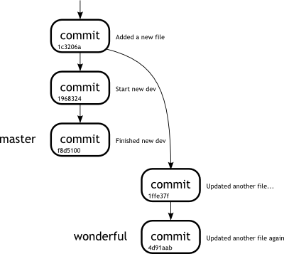
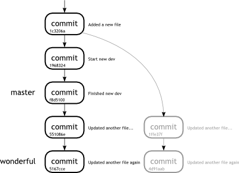
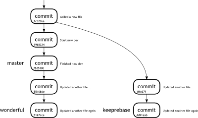

Week 7Day 4 - "Starting to get rebased"
Using rebase with branches
Up until now we have used git rebase to work on our current branch, modifying a few things here and there.
This is actually one of the simplest things that rebase can perform, and as hinted to in our workflow design, we can actually use git rebase to perform something called Continuous Integration.
As we stated before, one of the most interesting uses of using git rebase is to update your branch with changes from another, whilst keeping your development intact.
The great part about it is that there is no messy merging, your commits appear at the end of the tree which makes things nice and tidy.
Let us go back to our example and add some more commits to the master branch.
john@satsuki:~/coderepo$ git checkout master
Switched to branch 'master'
john@satsuki:~/coderepo$ touch cont_dev
john@satsuki:~/coderepo$ echo "New info" >> cont_dev
john@satsuki:~/coderepo$ git add cont_dev
john@satsuki:~/coderepo$ git commit -a -m 'Start new dev'
[master 1968324] Start new dev
1 files changed, 1 insertions(+), 0 deletions(-)
create mode 100644 cont_dev
john@satsuki:~/coderepo$ echo "A cool function" >> cont_dev
john@satsuki:~/coderepo$ git commit -a -m 'Finished new dev'
[master f8d5100] Finished new dev
1 files changed, 1 insertions(+), 0 deletions(-)
john@satsuki:~/coderepo$ git logg -n5
* f8d5100 (HEAD, master) Finished new dev
* 1968324 Start new dev
| * 4d91aab (wonderful) Updated another file again
| * 1ffe37f Updated another file with 2 edits
|/
* 1c3206a Added a new file
john@satsuki:~/coderepo$
You may have noticed that we seem to have introduced a new command here called git logg.
The command seems to do exactly the same as our git log --graph --pretty=oneline --all --abbrev-commit --decorate command.
For more information about what we have done here, see the callout called An alias in our midst.
Information - An alias in our midst
Some times, you will get tired of typing the same old long string of parameters into Git.
Though some people tend to frown upon using them, aliases can significantly increase your productivity, by allowing you to shortcut annoyingly long commands.
You may have noticed our git log --graph --pretty=oneline --all --abbrev-commit --decorate command from before.
It is awfully long.
Let us create an alias called git logg. There are multiple ways to do this, but we are going to get a little down and dirty and edit the .git/config file in our repository.
You will find a few stanzas which start like this [core], followed by a number of lines.
If you don't already have one, use the editor to add [alias] at the end of the file, so that your file has a section looking like the following. [alias]
logg = log --graph --pretty=oneline --all --abbrev-commit --decorate
Once saved, we can use git logg just like any other Git command.
As you can see from the example in the text, we can even append more parameters that the parent command git log usually accepts.
So we can do things like git logg -n5 to get only five entries.
So we have two development trees, our master which is what our development work is based on, and our wonderful branch, which is where we are performing our development work.
The task now is to update the wonderful branch, with all of the changes that have taken place in master.
To do this, we use the git rebase tool once more, but this time in a slightly different manner.
john@satsuki:~/coderepo$ git checkout wonderful
Switched to branch 'wonderful'
john@satsuki:~/coderepo$ git rebase master
First, rewinding head to replay your work on top of it...
Applying: Updated another file with 2 edits
Applying: Updated another file again
john@satsuki:~/coderepo$ git logg -n5
* 5167cce (HEAD, wonderful) Updated another file again
* 551086e Updated another file with 2 edits
* f8d5100 (master) Finished new dev
* 1968324 Start new dev
* 1c3206a Added a new file
john@satsuki:~/coderepo$
We started by checking out the wonderful.
With the git rebase master command, we told Git to take all of the changes in our topic branch called wonderful, and replay them on top of the new master.
We could have also used the command git rebase master topic which would actually have done the original git checkout for us.
Notice again, that our commit IDs have changed.
The contents, in this case, remain identical, as we have not hit upon any conflicts during out rebase.
If we had, we would have to have resolved that, and then run the git rebase --continue, or git rebase --abort to abort the rebase completely.
So, our wonderful branch is now sat on top of the new development changes and instead of having two diverging branch heads, we now have a single branch which wonderful extends from.
In the trenches...
"Martha!" Simon shouted across the office at the seemingly new Git expert.
"HELP!!"
Martha got up from her seat.
It hadn't been fifteen minutes since she had shown Simon how to rebase branches and now he was calling her again.
At first she had tried to ignore it, but the waves of SOS had plunged through the headphones and reverberated round her head one too many times.
She placed the music on hold and put the headphones on the desk.
"What's up Simon?" she asked, smiling at John who was chuckling to himself at his desk.
"Well, I kinda rebased, but I wish I hadn't now, cos it all went wrong. How can I go back?"
It's an interesting question.
How would we move back again? We have rewritten history, how could we possibly hope to go back again? We have discussed before how most things in Git are never really immediately gone, even if we delete them.
Does this apply here too? Of course it does.
Remember that a branch is really just defined by which commit the HEAD points to.
Let us draw a few diagrams to show how the tree of commits looks before and after our rebase.
|  |
|
Figure 5
Our repository before the rebase |
|
Figure 5 shows our repository before we perform the rebase.
We can quite clearly see that there are two branches, diverging from the common ancestor, 1c3206a.
In Figure 6, we see the repository after the rebase has taken place.
Notice that the two commits that were forming the wonderful branch are now coloured in grey.
|  |
|
Figure 6
Our repository after the rebase |
|
The grey commits are no longer referenced.
No branche HEADs point to them, and no other commits rely upon them.
In short they have been orphaned, or are left dangling.
A dangling commit has no references left pointing to it.
Remember each commit relies on its parent.
Therefore because the HEAD of wonderful now points to 5167cce, and that in turn points to 551086e.
The original commit line is unchanged.
Thinking back to previous weeks, we have had a similar situation before.
If we know the commit ID that we wish to return to, there really is nothing more complicated than issuing a git reset.
The only tricky part is knowing the commit you wish to return to.
We do however have a weapon at our disposal.
The git log tool can be used with the -g.
This parameter forces the Git to refer to the reflog for entries, instead of traversing the usualy tree.
If you remember, the reflog is our key to seeing what happened in the past.
It holds a list of all the previous HEADs of each branch.
By supplying the branch name, we can see everything that happened to the wonderful branch.
john@satsuki:~/coderepo$ git log -g wonderful -n2
commit 5167cce7864ca71420ce5dc37ec9b3f931727db3
Reflog: wonderful@{0} (John Haskins <john.haskins@tamagoyakiinc.koala>)
Reflog message: rebase finished: refs/heads/wonderful onto f8d5100142b43ffaba9bb
Author: John Haskins <john.haskins@tamagoyakiinc.koala>
Date: Wed Jul 6 09:30:40 2011 +0100
Updated another file again
commit 4d91aab57aaad020e62486805e25d0d6f06fdc3e
Reflog: wonderful@{1} (John Haskins <john.haskins@tamagoyakiinc.koala>)
Reflog message: rebase -i (finish): refs/heads/wonderful onto 1c3206a
Author: John Haskins <john.haskins@tamagoyakiinc.koala>
Date: Wed Jul 6 09:30:40 2011 +0100
Updated another file again
john@satsuki:~/coderepo$
As you can see, the log shows that we recently completed two rebases.
The first resulted in an ID of 4d91aab and the second resulted in 5167cce.
As it happens, we are trying to get back to the end of that first rebase, before we ran the second.
So if we run the reset against that ID, we should return to our pre-rebased state.
john@satsuki:~/coderepo$ git reset --hard 4d91aab
HEAD is now at 4d91aab Updated another file again
john@satsuki:~/coderepo$ git logg -n5
* f8d5100 (master) Finished new dev
* 1968324 Start new dev
| * 4d91aab (HEAD, wonderful) Updated another file again
| * 1ffe37f Updated another file with 2 edits
|/
* 1c3206a Added a new file
john@satsuki:~/coderepo$
As you can see, even though the commit messages are identical, the history of them differs.
Obviously now, it is our rebased version which is left dangling and if it continues to go unused, it will eventually be deleted.
Of course it is also possible to create a branch to point to the dangling commit.
In this way it would never get deleted.
Let us just see how we could achieve this.
Armed with the knowledge that the commit we are looking for is 5167cce, we can run the git branch command and specify a starting point.
john@satsuki:~/coderepo$ git branch keeprebase 5167cce
john@satsuki:~/coderepo$ git branch -v
keeprebase 5167cce Updated another file again
master f8d5100 Finished new dev
* wonderful 4d91aab Updated another file again
zaney 7cc32db Made another awesome change
john@satsuki:~/coderepo$ git logg -n7
* 5167cce (keeprebase) Updated another file again
* 551086e Updated another file with 2 edits
* f8d5100 (master) Finished new dev
* 1968324 Start new dev
| * 4d91aab (HEAD, wonderful) Updated another file again
| * 1ffe37f Updated another file with 2 edits
|/
* 1c3206a Added a new file
john@satsuki:~/coderepo$
|  |
|
Figure 7
Our repository after the recovery |
|
Notice our branch is now created and looking at the log, it contains the same two commits and the tree looks as we would expect.
We have our another_file updates in both branches.
|
|